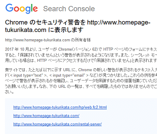
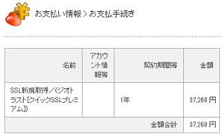
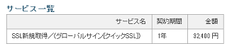
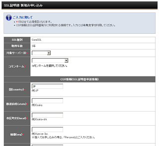

サイトにSSLを導入する際の実際の手順
先日、グーグルのサーチコンソールから「HTTPSに移行しないとクロームで警告を表示します」という趣旨のメールが来ていたため、当サイトでもSSLに対応することにしました。

当サイトではsixcoreを利用しており、そちらで「ジオトラストのクイックSSLプレミアム」を導入してみたのですが、料金の方は初期費用を含め37,260円でした。
■ジオトラスト クイックSSLプレミアム

また、同じサーバーに健康系のサイトも設置しているのですが、そちらでは「グローバルサインのクイックSSL」を導入しており、そちらは初期費用を含めて32,400円でした。
■グローバルサイン クイックSSL

どちらがよいのかは甲乙つけがたいですが、グローバルサインの方が気持ち安めかもしれません。
かなり高額な出費になってしまいましたが、訪問者さまのセキュリティーを考えるとこれは致し方ありません。おそらく、SSL専用のIPアドレスが付与されるため、けっこうな費用がかかるのだろうと思います。
ただ、他のレンタルサーバーでは「SNIのネームベース」の格安SSLを利用できるケースもあり、そのようなサーバーでは数千円程度でも利用することができます。また、サーバーによっては無料SSLの「Let's Encrypt」を利用できるケースもあります。
- 専用IPアドレスのグローバルサイン、ジオトラスト → 高額な費用がかかる
- 「SNIのネームベース」の格安SSL → 数千円程度でも可能
- 「Let's Encrypt」などの無料SSL → 無料で設定可能
いずれの場合でも、通信の暗号化に関する機能的な違いはないとのことなので、費用をおさえて導入するには格安SSLや無料SSLなども検討されてみるとよいかもしれません。
SSL申請の際のコモンネームについて
このSSL申請の時点で気を付けたい点は「wwwあり・なし」の違いです。
一般的には「wwwあり」を付けたドメイン名で申し込みをすれば、両方で接続が可能となるため、「wwwあり」でサイトを公開している場合にはそのままwwwを付けて申し込みをすればよいと思います。
当サイトも「www付き」のURLで運営していますので「www.homepage-tukurikata.com」にて申請しました。
一方、「wwwなし」の「example.com」の形で公開している場合は判断が難しいかと思います。一応は「www付き」で申し込みをして両方でアクセス可能な状態にしておき、.htaccessにて「wwwあり」を「wwwなし」にリダイレクト設定すればよいと考えるかもしれません。
けれども、SSLのブランドによっては、サイトシールや携帯サイト（※フィーチャーフォン）がwww付きでしか利用できないケースがあります。
そのため、「example.com」の形でサイトを運営している場合は「wwwあり」を捨て、そのまま「wwwなし」のコモンネームで申し込んだ方がよい気もしますが、このあたりは判断が難しいかと思います。申し込みをする際、この点についてはよく確認しておくことをおすすめします。
申請後、当サイトの場合、土日をはさんで2日程度で設定完了となりましたが、無料SSLの場合は数時間程度でも完了となるはずです。
SSL申し込みの際の「CSR」の作成方法
実際にSSLの申込みをする際、サイトの運営主体に関する「CSR」などの作成が必要になります。

ドメイン認証の場合、このCSRに個人情報を記載しても、発行された証明書には登録したコモンネームのみ（ドメイン名など）が表示されることになります。そのため、個人のプライバシーは保護されており、証明書に個人情報が表示されるわけではありません。
一方、「企業認証」や「EV認証」などでは組織名や住所なども証明書に表示されるケースもあるため、お使いのSSLブランドにてご確認されることをおすすめします。
また、申込みの際に注意すべき点として、コモンネームの選択時に「wwwのあり・なし」の違いをよく確認しておかないと「www付き」で利用できなくなることがあります。
レンタルサーバーへのドメイン設定などでは、「wwwなし」のドメイン名で登録すれば、ほぼ「wwwあり」のURLも利用できますが、このSSL申込みについては「wwwなし」でコモンネームを登録すると「wwwあり」を利用できなくなるケースが多いです。
かといって、「www付き」で申し込みをしてwwwなしへの301リダイレクトをしても、携帯サイト（フィーチャーホン）へ非対応になってしまうケースもあります。申込み時のコモンネームの選択については、よく確認してから申し込むようにしましょう。
SSL設定後にドメインが表示されない場合
■SSL専用のIPアドレスへのDNS設定
SNIによるネームベースでのSSLやLet's Encryptの場合は特に必要ありませんが、一般的な独自SSLの場合、ひとつのIPアドレスにSSL証明書はひとつまでとなっているため、レンタルサーバー側からSSL専用のIPアドレスを渡されるはずです。
そのため、SSL専門のIPアドレスへDNS設定を変更する必要があります。wwwありとなしの両方で申し込んだものの、「wwwなし」の方では表示されない場合、まずはこのIPアドレスの設定を確認されるとよいでしょう。
■サブドメインが表示されなくなった場合
予算の都合上、サブドメインについては通常のhttp:で運用する場合、独自SSLを導入したあとにサブドメインが表示されなくなるケースもあります。
この場合、まずはhttpで運用するサブドメインまでSSL専用のIPアドレスにDNS設定してしまっていないか確認してみることをおすすめします。加えて、HSTSの設定で「includeSubDomains」を記述していないかを確認してみることをおすすめします。
さらに、.htaccessのリダイレクト設定がサブドメインにも影響している可能性があるため、その場合にはサブドメインにも.htaccessを設定することで回避することができます。
■サブドメイン側の記述例
RewriteEngine On
RewriteCond %{HTTP_HOST} ^example\.com
RewriteRule ^(.*) http://hoge.example.com/$1 [R=301,L]サブドメインについてもSSL対応する場合、複雑な対応が必要となってしまうため、できるだけ、サポートの充実しているレンタルサーバーを利用するのがよいかもしれません。
次のページ → SSL設定後のホームページ修正方法